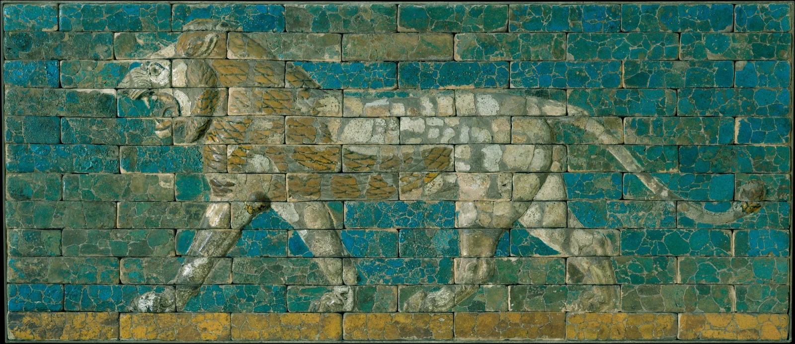

让一面墙，迈出一步
砖缝把身体切开，步伐却仍然完整。

约公元前 604–562 年 · 新巴比伦时期 · 陶质、釉 · 97.2 × 227.3 厘米
阅读说明：年代、材质、编号与历史背景为馆方资料；构图、色彩、情绪及借鉴方案为独立视觉分析。
先看一步，再看一面墙
先别急着放大。隔着一点距离看，狮子的前腿、腹线与卷起的尾巴，会把一整片蓝绿组织成清楚的身影。靠近以后，砖缝、失釉和斑驳才慢慢浮出来。吸引我的正是这两次观看：远处是力量，近处是时间。
构图｜让网格承受运动
狮子朝左，身体几乎横贯长方形画面；张开的嘴和伸出的前爪把方向推得很明确。尾端的弯钩在右侧收住余势，腹下的蓝色空隙则让四肢彼此分开。水平砖缝像一套稳定的谱线，斜出的腿在其间切换节拍。身体被分块，轮廓却连续：我们会主动把缺口接起来，完成一次视觉上的行走。
色彩｜冷底里的暖色脉搏
蓝与绿相邻，形成冷色类似色底；鬃毛与底缘的赭黄带来温差。这里的蓝绿与黄赭并非严整的一对互补色，画面的力量更依赖冷暖和明度对照。乳白躯体比背景更亮，先被眼睛辨认；暗线再把爪、嘴和鬃毛分开。斑驳降低了整体纯度，让赭金有重量，也让蓝绿带着矿物般的沉静。此处讨论的是现存数字图像，不能据此还原初建时的色貌。
光影｜釉面让轮廓有了厚度
光沿凸起的腿部与脸部留下细亮边，凹陷和砖间缝隙显得更深。这样的阴影来自浮雕与拍摄照明；它和绘画中描绘出来的明暗不同。釉面的亮斑、磨损处的哑光又彼此交替，视线在光滑与粗粝之间停顿。仅凭这张照片，无法确认拍摄灯位或每一处修复范围。
技法与作者｜把个体放进共同尺度
馆方将本件定为约公元前 604–562 年的巴比伦釉陶壁板，编号 31.13.1。模制釉砖能让建筑表面承载浮雕和色彩；本件具体工匠姓名未载。它属于巴比伦仪仗大道狮子装饰的语境：狮子与女神伊什塔尔相关，兼具守护与仪式意义。这是工艺与建筑协作的作品，不能替无名制作者补写个人传记。年代、材质与历史语境见馆方记录。
为何动人｜碎片仍然朝向一个方向
对我而言，动人之处在于完整的姿态容得下表面的损伤。砖块没有隐藏接缝，狮子也没有因此失去劲力。我们同时看见一头正在前行的兽，和一件已度过漫长时间的物。把它当作今天的视觉练习，可以学到一种克制：让最清楚的轮廓承担表达，让材料留下自己的声音。
借鉴练习｜一套能落地的蓝绿配色
海报或穿搭可试：60% 深蓝绿 #17636A 作大底，25% 暖白 #DDD7BD 作主形，10% 赭金 #AD873A 作重点，5% 墨色 #243C3C 收边。它们是编辑练习色，并非原作测色或古代配方。穿搭可以是蓝绿外套＋暖白内搭＋少量赭色配饰；版面则让一条连续主轮廓横穿模块网格。先缩小到手机缩略图检查主形，再加纹理；别让每一格都争当主角。